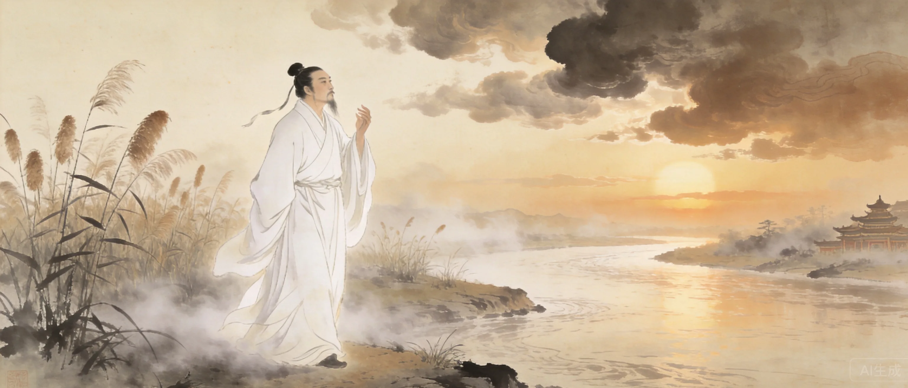
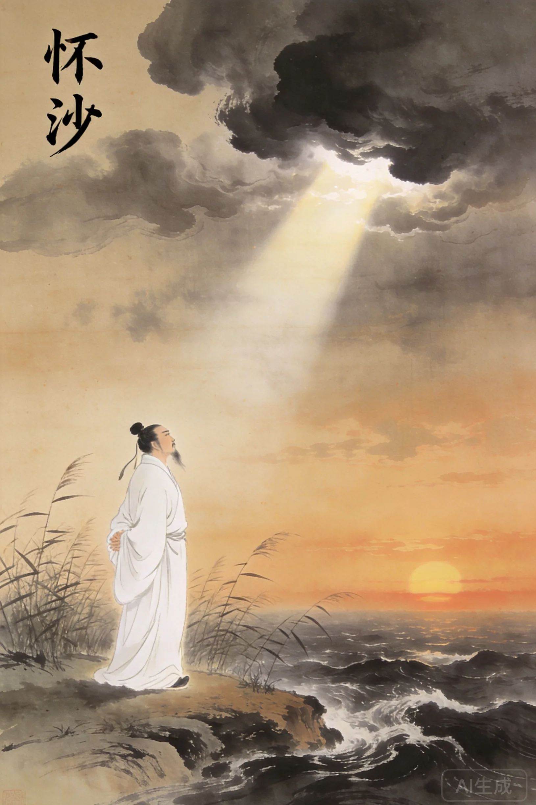
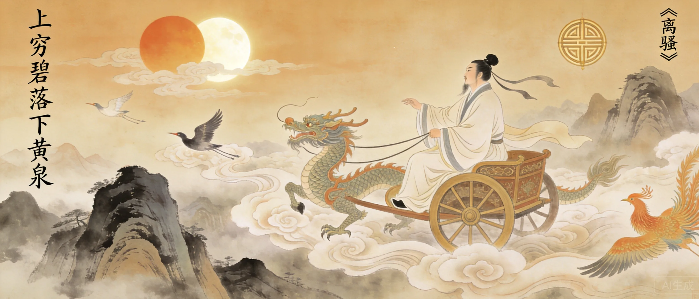
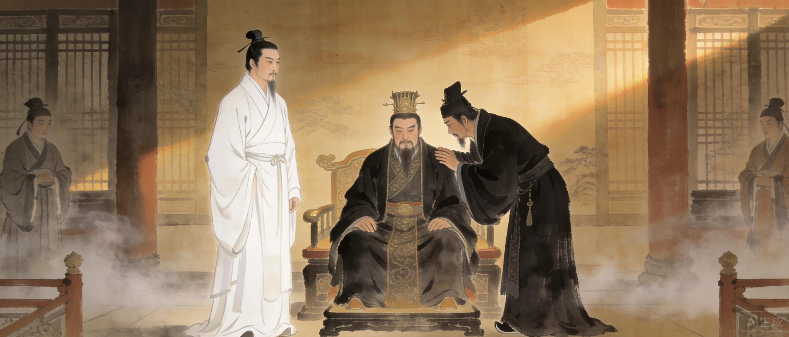
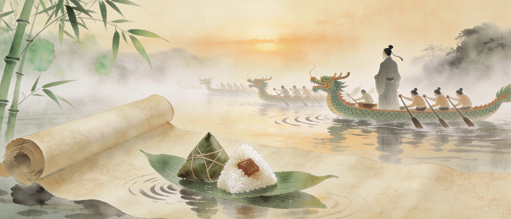

名平，字原。芈姓屈氏，与楚王同宗。少年博学。
受楚怀王信任，举贤授能、修明法度，联齐抗秦。
上官大夫靳尚进谗。怀王怒而疏远屈原。
流放汉北。作《离骚》以诗言志。
流放沅湘十余年。行吟泽畔。
白起破郢都。抱石投汨罗江，年约六十二。


《离骚》是中国文学史上最长的抒情诗（2490字），也是屈原最伟大的作品。「离骚」即「罹忧」——遭遇忧愁。全诗以第一人称展开一场上穷碧落下黄泉的精神漫游：诗人驾龙乘风，朝发苍梧夕至县圃，叩天门而不开，求宓妃而不得。这是中国文学史上第一次将个人命运与宇宙秩序并置，第一次以如此巨大的体量承载一个灵魂的痛苦、怀疑、追问与坚守。
司马迁读《离骚》而悲其志，刘勰赞之「惊采绝艳，难与并能」，王逸称之为「词赋之祖」。它开创的香草美人象征系统和怨刺传统，影响了两千年中国文学。
**从《九歌》开始读。** 比起《离骚》的漫长求索，《九歌》更短、更可感，十首诗读完不会害怕。然后回到《离骚》，你会发现那两千多字不是负担，而是这个人在被流放后把所有愤怒、怀疑、坚守炼成的一颗星。
屈原投江后，百姓划船搜救、投米入江。后世演变为端午节——赛龙舟、吃粽子延续两千余年，可能是人类历史上最漫长的对一位诗人的纪念。
《诗经》之「风」与屈原《离骚》之「骚」并称中国文学两大源头。风为现实主义，骚为浪漫主义——前者是民间的合唱，后者是天才的独唱。
司马迁在《史记》中为屈原立传，写道：余读《离骚》《天问》《招魂》《哀郢》，悲其志。适长沙，观屈原所自沉渊，未尝不垂涕，想见其为人。两个被命运放逐的灵魂，在此产生了跨越时空的共鸣。
屈原发明了「香草美人」的比喻传统——以香草喻美德、以美人喻君主。此后两千年，中国文人写失意不必说失意，写忠诚不必说忠诚，写怀才不遇不必说怀才不遇——只需要一朵兰花、一位迟暮的美人。这是中国文学最持久的基因：不说破，但比说破了更刻骨。王逸称《离骚》为「词赋之祖」，不只因为它最早，更因为后来所有的词赋都在它的阴影下生长。
一种被流放的灵魂，选择了不流放自己的原则。屈原的质地不是悲愤——悲愤是第二层。第一层是尊严：我可能被放逐，但我做的选择不需要被放逐。他投江不是投降，是他说「我已经走到了我能走的尽头，再往前走就是背叛」——然后他停下来，变成了一条江。

早年信任屈原子以国政，后听信谗言将其疏远。最终被秦骗入武关，客死异乡。
靳尚，妒忌屈原之才，多次向怀王进谗。
屈原之后楚国最重要的辞赋家，阳春白雪''下里巴人故事的创造者。
屈原投江前三年，亚里士多德刚刚开始给亚历山大上课。西方的理性主义刚刚学会走路时，中国的浪漫主义已经在汨罗江底沉睡了。同一年，罗马共和国正在意大利中部扩张，阿育王还是印度的一个王子——世界三大文明的奠基者几乎同代。
端午节是世界上最长寿的对一位诗人的纪念——两千三百年来从未中断。刘勰在《文心雕龙》中称屈原「惊采绝艳，难与并能」。《离骚》是后世所有怨刺文学的总源头。王国维说他的伟大在于「变《三百篇》之旧体而为新声」——他是第一个用个人命运写宇宙的诗人。
